All in One View
Content from ggplot2 essentials (20 min)
Last updated on 2026-07-03 | Edit this page
Estimated time: 30 minutes
Overview
Questions
- How do I create plots with
ggplot2? - How do I save the plots I created?
Objectives
- Use ggplot2 to generate plots.
- Know the three components to a basic ggplot2: data, aesthetic mappings, geometric objects.
- Manipulate the aesthetic mappings of a plot.
- Save a plot created with ggplot() to disk.
Plotting is a key component of exploratory data analysis and a powerful way to identify patterns, trends, and relationships between variables in your dataset.
In this lesson, we will use the ggplot2 package, a
widely used system for creating clear and flexible data visualisations
in R.
ggplot2 is built on the grammar of graphics, which is
the idea that any plot can be built from the same set of components: a
data set, mapping aesthetics, and
graphical layers:
Data are the data that you, the user, provide.
Aesthetic Mappings are what connect the data to the graphics. They tell
ggplot()how to use your data to affect how the graph looks, such as changing what is plotted on the X or Y axis, or the size or color of different data points.Geometric objects (geoms) are the parts of the plot that we can see, such as points, lines, or bars. Each geom creates a different type of plot (e.g. scatter plots, histograms, bar charts). In
ggplot2, plots are built up in layers, with each geom added as new layer.
Data
In this lesson we will use the mpg dataset, which is
included with the ggplot2 package. This dataset contains
fuel economy data for a range of cars. Fuel efficiency is recorded in
miles per gallon (mpg), which is commonly used in the United States (in
Australia, we more often use litres per 100 km). Higher values indicate
better fuel efficiency.
Because mpg is built into ggplot2, we can
use it directly without needing to load an external file.
Setup
We are going to be using functions from the
ggplot2 package to create visualizations
of data. Functions are predefined bits of code that automate more
complicated actions. R itself has many built-in functions, but we can
access many more by loading other packages of functions
and data into R.
If you don’t have a blank, untitled script open yet, go ahead and
open one with Shift+Cmd+N (Mac) or Shift+Ctrl+N
(Windows). Then save the file to your scripts/ folder, and
title it workshop_code.R.
Earlier, you had to install the ggplot2
package by running install.packages("tidyverse"). That
installed the package onto your computer so that R can access it. In
order to use it in our current session, we have to load
the package using the library() function.
R
library(ggplot2)
We will use the mpg dataset that is prepackaged with
ggplot.
In R, the str() function provides a summary of the
dataset’s internal structure. It tells you the total number of
observations (rows) and variables (columns), the data type of each
column (e.g., numeric, character, or factor), and displays the first few
values of each variable.
R
str(mpg)
OUTPUT
tibble [234 × 11] (S3: tbl_df/tbl/data.frame)
$ manufacturer: chr [1:234] "audi" "audi" "audi" "audi" ...
$ model : chr [1:234] "a4" "a4" "a4" "a4" ...
$ displ : num [1:234] 1.8 1.8 2 2 2.8 2.8 3.1 1.8 1.8 2 ...
$ year : int [1:234] 1999 1999 2008 2008 1999 1999 2008 1999 1999 2008 ...
$ cyl : int [1:234] 4 4 4 4 6 6 6 4 4 4 ...
$ trans : chr [1:234] "auto(l5)" "manual(m5)" "manual(m6)" "auto(av)" ...
$ drv : chr [1:234] "f" "f" "f" "f" ...
$ cty : int [1:234] 18 21 20 21 16 18 18 18 16 20 ...
$ hwy : int [1:234] 29 29 31 30 26 26 27 26 25 28 ...
$ fl : chr [1:234] "p" "p" "p" "p" ...
$ class : chr [1:234] "compact" "compact" "compact" "compact" ...Data dictionary
The main variables we will use in this lesson are:
- displ: engine size (litres)
- hwy: highway fuel efficiency (miles per gallon)
- cty: city fuel efficiency (miles per gallon)
- class: type of car (e.g. SUV, compact)
- drv: drive type (front-wheel, rear-wheel, 4-wheel)
Know your data
Before creating any plots, it’s useful to briefly explore the dataset to understand what variables are available and what they represent.
Take a minute to explore the dataset:
- What types of variables are included (numeric, categorical)?
- Which variable might you use for the x-axis if you wanted to explore engine size?
- Which variable could you use for the y-axis to represent fuel efficiency?
- Is there a categorical variable you could use to group points?
- numeric: displ, year, cyl, cty, hwy
- categorical: manufacturer, model, trans, drv, fl, class
- engine size: displacement
- fuel efficiency: mpg
- any of the categorical variables can be used to group points
Plotting with ggplot2
Let’s start off building an example using the mgp
data.
The most basic function is ggplot(), which lets R know
that we’re creating a new plot. Any of the arguments we give the
ggplot() function are the global options for the
plot - they apply to all layers on the plot.
R
ggplot(data = mpg)
Here we called ggplot() and told it what data we want to
show on our plot. This is not enough information to actually draw
anything. However, it does create a blank plot that helps demonstrate
how the components are put together. We’re essentially providing the
base layer for other elements to be added on to.
Next we’re going to add in the mapping aesthetics
using the aes() function. aes() tells
ggplot() how variables in the data map to
aesthetic properties of the plot, such as which columns of the
data should be used for the x and y
locations.
R
ggplot(data = mpg,
mapping = aes(x = displ, y = hwy))
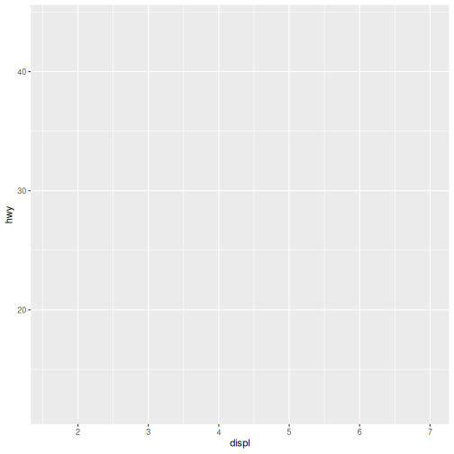
Here we told ggplot() we want to plot the “displ” column
of the data frame on the x-axis, and the “hwy” column on the y-axis.
Notice that we didn’t need to explicitly pass aes these
columns (e.g. x = mpg[, "disp"]). This is because
ggplot() is designed to look in the data
for that column!
Notice again that we still don’t have a plot. The third and final
component needed to make a plot is a geom function to
tell ggplot() how to visually represent the data. For
example, if we want to use points to represent the data
in our plot, we use the geom_point() function.
The + is used to add layers to a plot.
R
ggplot(data = mpg,
mapping = aes(x = displ, y = hwy)) +
geom_point()
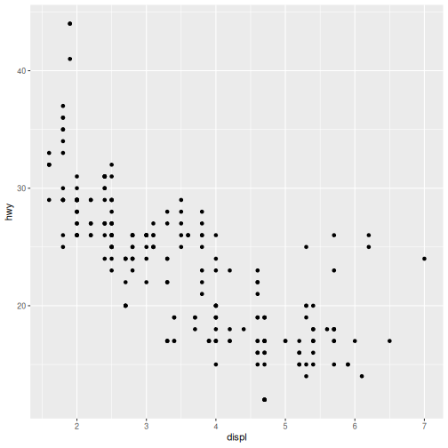
There we have it! A scatter plot of points that represents the relationship between x (‘displacement’) and y (‘highway fuel efficiency’) in our dataset.
These three components — data, aesthetic
mappings, and geoms — are all you need to
create a basic plot in ggplot2.
In the rest of this lesson, we will build on this foundation to create different types of visualisations and explore how to adapt them for different questions.
Aesthetic Mappings
Modify the example so that the plot shows how city fuel efficiency relates to engine displacement.
- What can we say about the relationship?
- How does it compare to the relationship with highway efficiency?
- (BONUS) How could we modify this plot to make the difference with highway more obvious?
- City fuel efficiency (cty) and engine displacement (displ) have a
strong negative correlation.
- As engine displacement (size in liters) increases, city fuel economy (miles per gallon) noticeably decreases, meaning larger engines consume significantly more fuel.
- Highway miles per gallon (hwy) are generally higher than city miles.
- Because of this, the hwy is higher on the y-axis and stretches across a slightly wider range.
- We could put both sets of data on the same plot.
R
ggplot(data = mpg,
mapping = aes(x = displ, y = cty)) +
geom_point()

Saving the plot
The ggsave() function allows you to save a plot created
with ggplot2 quickly and easily with just a filename:
R
ggsave(filename = "fig/my_ggplot.png")
OUTPUT
Saving 7 x 7 in imageNotice that we did not provide any additional arguments to
ggsave().
- If we omit the
plotargument, it will automatically save the last plot you created withggplot. - If we omit the
deviceargument, it will use the file extension to determine the device.
In this episode, we introduced the grammar of graphics and the core
components of ggplot2: data, aesthetic mappings, and geometric layers.
Using these components, we created our first plot with
geom_point() and explored how variables can be mapped to
visual properties such as colour.
In the next episodes, we will build on these basics to explore our dataset in more detail. We will use a selection of commonly used geoms to examine relationships between variables, the distribution of individual variables, differences between groups, and the composition of our data.
-
ggplot2can quickly create simple plots for exploratory data analysis. -
ggplot2plots are built around the grammer of graphics where the key components of a plot can be extended with the additional geom layers.
Content from Scatterplots and Relationships
Last updated on 2026-07-03 | Edit this page
Estimated time: 30 minutes
Overview
Questions
- How can scatterplots be used to explore relationships between variables?
- How do aesthetic mappings and layers help reveal patterns in data?
Objectives
- Create scatterplots to explore relationships between variables.
- Distinguish between aesthetic mappings and aesthetic settings.
- Add and modify layers in a ggplot.
R
library(ggplot2)
We’ve seen how plots can be created quickly using the key components
of a ggplot and we know that scatter plots can be used to
explore relationships between variables in our dataset.
Let’s take a closer look at the relationship between engine size
(displ) and city fuel efficiency (cty). We
will also explore how additional aesthetic mappings and layers can help
reveal patterns in the data.
Recall our displacement vs city fuel efficiency plot.
R
ggplot(data = mpg,
mapping = aes(x = displ, y = cty)) +
geom_point()
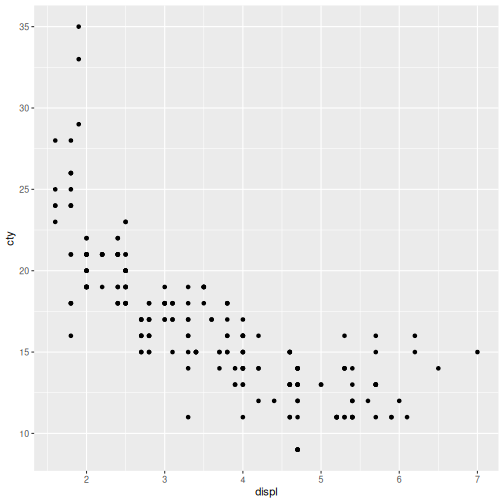
Mapping and Setting Aesthetics
So far, we have mapped variables to the x- and y-axes. We can also control other visual properties, such as colour, size, and shape in two ways. We can map them to variables in our data, or set them to a fixed value that is applied to all observations.
For example, we can map a colour to each
class of vehicle.
R
ggplot(data = mpg, mapping = aes(x = displ, y = cty,
colour = class)) +
geom_point()
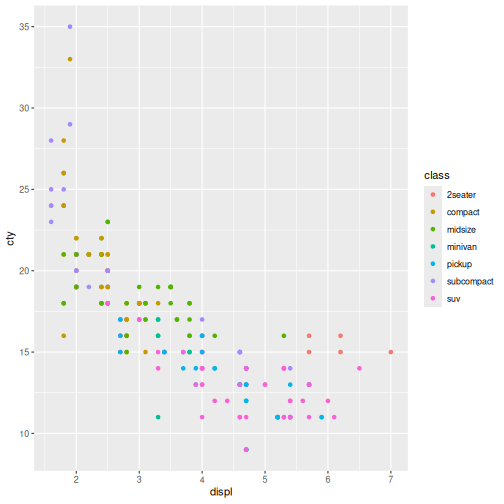
Aesthetics - Colour trends
- What trends do the colours bring out in the data?
- Are they what you expected?
Answers may vary.
In the above example we used a variable to control the colouring of the datapoints. We can also set a fixed value.
Lets modify the transparency of the points, using the
alpha argument, which is especially helpful when you have a
large amount of data which is very clustered.
R
ggplot(data = mpg, mapping = aes(x = displ, y = cty,
colour = class)) +
geom_point(alpha = 0.3)
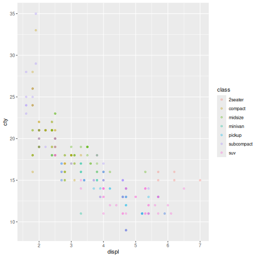
Finally, we both map and set aethestics for a geom. In this example, we will move the colour by class aesthetic to the specific geom_point(). This plot should look like the one above, we’ve only moved the coloring to the layer in order to make more complex visualisations.
R
ggplot(data = mpg, mapping = aes(x = displ, y = cty)) +
geom_point(aes(colour = class), alpha = 0.3)

Here the colour mapping only applies to the points because it was
specified within geom_point(). This allows different layers
to use different aesthetic mappings.
Changing the way a dataset is displayed visually is useful for distinguishing patterns and extracting information. Taking it one step further, we can add more geoms to our plot to highlight relationships in the data.
Layers
Layers in ggplot2 are building blocks stacked on top of
each other to create more and more complex plots.
Let’s add geom_smooth() layer to the plot. Recall we use
the + symbol to stack the layers:
R
ggplot(data = mpg, mapping = aes(x = displ, y = cty)) +
geom_point(aes(colour = class), alpha = 0.3) +
geom_smooth()
OUTPUT
`geom_smooth()` using method = 'loess' and formula = 'y ~ x'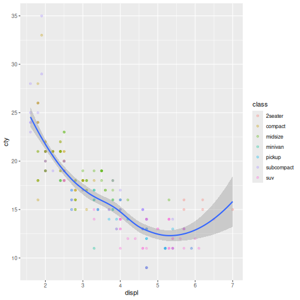
The geom_smooth() layer adds a trend line to the plot,
making the overall relationship between engine size and fuel efficiency
easier to see. In this case, it highlights that fuel efficiency tends to
decrease as engine size increases.
It’s important to note that each layer is drawn on top of the previous layer. In the plot above, the line has been drawn on top of the points.
What if we wanted to see the points on top of the lines?
Layer Order Matters
Switch the order of the point and smooth layers from the previous example. What happened?
To demonstrate, rearrange the drawing order:
The points now get drawn over the line! If we look closely the smooth line was drawn first, followed by the points.
R
ggplot(data = mpg, mapping = aes(x = displ, y = cty)) +
geom_smooth() +
geom_point(aes(colour = class), alpha = 0.3)
OUTPUT
`geom_smooth()` using method = 'loess' and formula = 'y ~ x'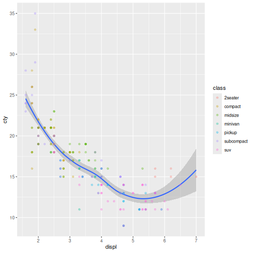
Tip: More aesthetics setting and mapping
So far, we’ve seen how to use an aesthetic (such as color) as a mapping to a variable in the data.
For example, when we use geom_point(aes(color = class)),
ggplot will give a different color to each class.
But what if we want to change the color of all lines to blue?
You may think that geom_point(aes(color = "blue"))
should work, but it doesn’t.
Since we don’t want to create a mapping to a specific variable, we
move the color specification outside of the aes() function,
like this: geom_point(color="blue").
Setting Aesthetics
Modify the color and size of the points on the point layer in the previous example.
Hint: do not use the aes() function.
Hint: use size to change the point size.
Answers may vary.
Notice that the color argument is supplied outside of
the aes() function. This means that it applies to all data
points on the graph and is not related to a specific variable.
R
ggplot(data = mpg, mapping = aes(x = displ, y = cty)) +
geom_smooth() +
geom_point(size = 3, color = "orange")
OUTPUT
`geom_smooth()` using method = 'loess' and formula = 'y ~ x'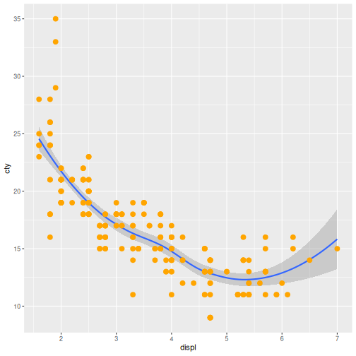
In this episode, we used scatterplots to explore the relationship between engine size and fuel efficiency.
We learned how aesthetic mappings can reveal additional patterns in the data and how aesthetic settings can be used to modify the appearance of a plot.
Finally, we introduced layers and used geom_smooth() to
highlight overall trends.
In the next episode, we will shift our focus from relationships between variables to the distribution of individual variables using density plots.
- Scatterplots are useful for exploring relationships between variables.
- Aesthetic mappings connect variables in the data to visual properties such as colour.
- Aesthetic settings apply the same visual property to all observations.
- ggplot2 plots can be built up by adding layers with
+. - Different layers can have different aesthetic mappings.
Content from Bar Charts and Distributions
Last updated on 2026-07-03 | Edit this page
Estimated time: 30 minutes
Overview
Questions
- How can we explore a single variable in ggplot2?
- What does the shape of a variable’s distribution tell us?
- How can we compare distributions across groups?
Objectives
- Create density plots to explore the distribution of a single variable
- Map a categorical variable to fill to compare distributions
- Describe distributions in terms of shape, spread, and overlap
- Recognise how density plots and histograms represent the same idea
R
library(ggplot2)
In the previous episode, we used scatterplots to explore relationships between two variables.
Now we’re going to shift focus and instead of asking, How do two variables relate?, we ask, What does one variable look like on its own?. This is called a distribution.
What is a distribution?
So far, we’ve been looking at relationships between variables. Now we’re going to focus on a single variable at a time.
A distribution tells us:
- What values occur
- How often they occur
- How those values are spread out
Visualising a distribution
We’ll start by looking at highway fuel efficiency (hwy)
in the mpg dataset.
R
ggplot(data = mpg, mapping = aes(x = hwy)) +
geom_density()

If we map a single variable (hwy) to the x-axis,
geom_density() creates a smooth curve. The height shows
where values are more common.
Interpreting a distribution
When reading a distribution, focus on:
-
Shape
- Is it symmetric or skewed left or right?
- One peak or multiple?
-
Spread
- Are values tightly clustered or widely spread out?
-
Concentration
- Where do most values fall?
Distribution Interpretation
Describe the distribution of highway fuel efficiency.
What else can we say about this plot?
Answers may vary.
In this plot there appears to be two peaks: one at approximately 15 hwy miles and a second higher peak at 26 hwy. We can see most cars cluster around the mid-range of highway fuel efficiency, with fewer cars at very high values.
Not much we can say without more information.
City Fuel Efficiency Density plot
Create a density plot of city fuel efficiency (cty).
- How does it compare to
hwy? - Does it look more or less spread out?
Answers may vary.
City fuel efficiency has a single cluster of vehicles at around 15-17 mpg with wide width and shorter tail.
R
ggplot(data = mpg, mapping = aes(x = cty)) +
geom_density()
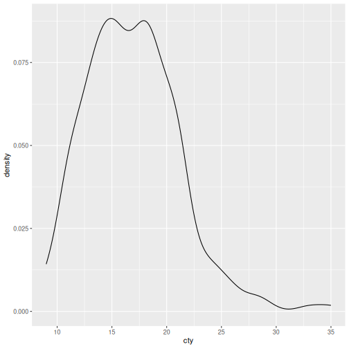
Comparing distributions with groups
Just like in the relationships episode, we can use aesthetics to reveal more information.
Here, we’ll compare fuel efficiency across vehicle
class:
R
ggplot(data = mpg, mapping = aes(x = hwy, fill = class)) +
geom_density()
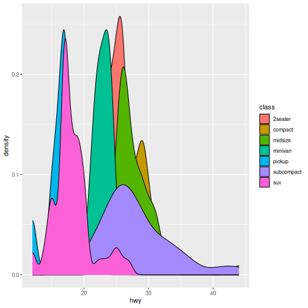
When we set fill to class each class gets
its own distribution. The curves overlap so we can compare them
directly.
Notice how some groups overlap heavily — this can make comparisons harder.
Group Plot Interpretation
- Which vehicle class tends to have higher fuel efficiency?
- Which class has the widest spread?
- Which classes look similar or very different?
Answers may vary.
Compact cars have the highest highway fuel efficiency.
There are not as many compacts in the dataset as there are 2seaters and midsize vehicles.
Subcompacts have the widest spread.
Many of the curves are similar.
Distribution of Classes Interpretation
Create a density plot of city fuel efficiency (cty) for
different classes of vehicles.
- How does it compare to
hwy? - Does it look more or less spread out?
Answer may vary.
R
ggplot(data = mpg, mapping = aes(x = cty, fill = class)) +
geom_density()
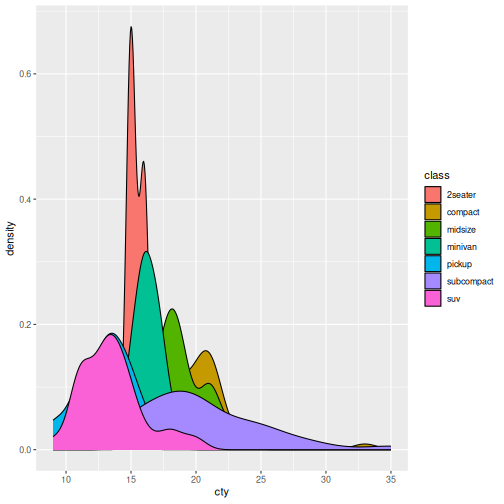
Why density plots?
Density plots are useful because they:
- Show the overall shape clearly
- Are smooth, reducing noise
- Make comparisons easier when multiple groups overlap
Histograms
A histogram shows the same idea differently:
R
ggplot(data = mpg, mapping = aes(x = hwy)) +
geom_histogram()
OUTPUT
`stat_bin()` using `bins = 30`. Pick better value `binwidth`.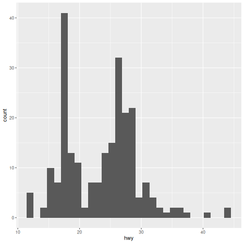
Unlike density plots, histograms depend on how the data are split into bins. Instead of a smooth curve, values are grouped into bars that show counts in each bin.
Same distribution, different representation
The appearance depends on how bins are chosen.
Density plots are often easier to compare.
Colour histogram by class (optional)
Use class to colour the histogram.
Hint: use aes().
What problems do you notice compared to density plots?
Most learners will move the fill argument directly from
the ggplot layer to the geom_histogram() layer. This will
break unless you use the aes() function to map each
class.
R
ggplot(data = mpg, mapping = aes(x = cty)) +
geom_histogram(aes(fill = class))
OUTPUT
`stat_bin()` using `bins = 30`. Pick better value `binwidth`.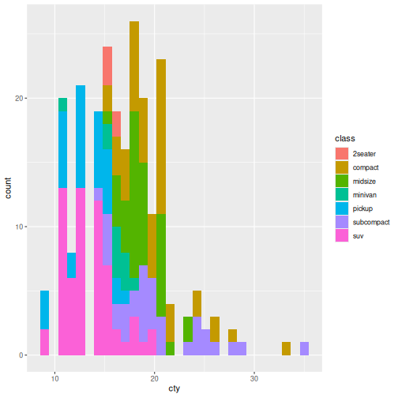
In this episode, we shifted from exploring relationships between variables to understanding individual variables through their distributions.
We used density plots to visualise how values are spread, and extended what we learned about aesthetic mappings by using fill to compare distributions across vehicle classes.
This introduced an important idea: while mappings like fill can add insight, they can also introduce overlap and complexity, especially as the number of groups increases.
In the next episode, we’ll build on this by looking more closely at how ggplot2 handles groups, and how we can control and organise them to make our visualisations clearer and more informative.
- A distribution describes how a single variable’s values are spread.
-
geom_density()creates a smooth representation of that distribution. - Mapping
fillallows comparison across groups. - Focus on shape, spread, and overlap
- Histograms show the same idea, but with binned counts instead of a smooth curve.
Content from Comparing Groups
Last updated on 2026-07-03 | Edit this page
Estimated time: 45 minutes
Overview
Questions
- How can we summarise a distribution?
- What key information helps us understand a distribution quickly?
- How can we compare these summaries across groups?
Objectives
- Interpret boxplots using median, spread, and outliers
- Explain why boxplots are commonly used in statistical analysis
- Create boxplots to compare distributions across groups
R
library(ggplot2)
In the previous episode, we used density plots to look at the distribution of a variable.
R
ggplot(data = mpg, mapping = aes(x = hwy)) +
geom_density()
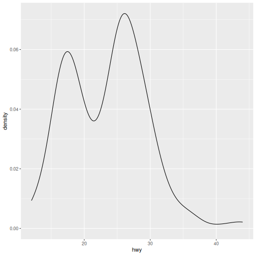
These show the overall shape of the data. But sometimes we’re less interested in the full shape, and more in a quick summary. To do that, we can use a different type of plot.
Introducing Boxplots
A boxplot is a visual summary of numerical data that displays its distribution, spread, and skewness in a compact way.
We replace geom_density() with
geom_boxplot() in our plot.
R
ggplot(data = mpg, mapping = aes(x = hwy)) +
geom_boxplot()
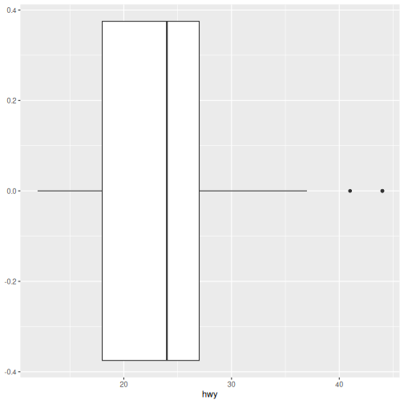
Here we have single boxplot of highway fuel efficiency. This looks quite different to everything we’ve seen so far. Unlike density plots, this doesn’t show the full shape — it summarises the distribution.
What do you think this plot is showing?
How to read a boxplot
Each boxplot shows:
- The Median is the line inside the box and indicates the “middle” value.
- The Spread or middle 50% is the box itself and shows where most values lie.
- Whiskers extend to typical lower and upper values.
- Outliers are individual points beyond the whiskers.
Interpreting the plot
- Where is the median fuel efficiency?
- How spread out are the middle values?
- Are there any outliers?
Answers may vary.
Density vs boxplot
Density plots show full shape, good for fewer groups. Boxplots show summary, better for many groups.
Same underlying data, different level of detail.
Do More With Box plots
Box plots can be used in many ways to extract more information from our data. They are especially common in statistical analysis and reporting.
So far, we’ve summarised a single distribution.
What if we want that same summary for each class of vehicle?
To get a boxplot for each class, we’re actually making
two different changes here — first how we represent the data, and then
how we organise it into groups. We must map:
-
class→ x (categorical group) -
hwy→ y (numeric variable)
R
ggplot(data = mpg, mapping = aes(x=class, y = hwy)) +
geom_boxplot()
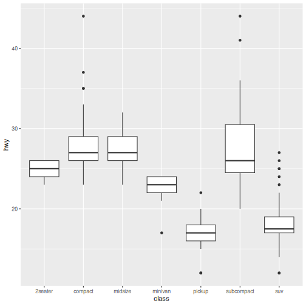
Here, each box represents the distribution of one group. The summary values we learned above are calculated for each class of vehicle.
Mapping Change
geom_density: x = hwy geom_boxplot (grouped): x = class, y = hwy
Group Plot Interpretation
- Which vehicle class tends to have higher fuel efficiency?
- Which class has the widest spread?
- Which classes look similar or very different?
- Are many outliers?
Answers may vary.
Add fill to boxplot
Reuse what we already know and use fill to colour each
class to help visually separate groups.
R
ggplot(data = mpg, mapping = aes(x=class, y = hwy, fill = class)) +
geom_boxplot()
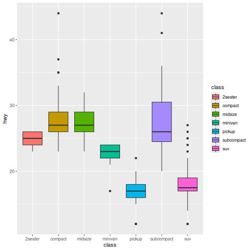
In this episode, we moved from viewing the full shape of distributions to summarising them using boxplots. This allowed us to compare groups more clearly using a small number of key values.
Next, we’ll shift from comparing groups to understanding how observations make up a whole, using visualisations designed for proportions and composition.
- Boxplots summarise distributions using median, spread, and outliers
- Mapping x = group and y = numeric creates group comparisons
- Boxplots are useful when comparing many groups
- They trade detail (shape) for clarity (summary)
Content from Composition
Last updated on 2026-07-03 | Edit this page
Estimated time: 45 minutes
Overview
Questions
- How can we show how data are divided into parts?
- What does each category contribute to the whole?
Objectives
- Create bar plots to show counts and proportions
- Map categorical variables to visualise composition
- Interpret plots as parts of a whole
- Recognise when bar plots are appropriate for composition
R
library(ggplot2)
In the previous episode, we used boxplots to summarise distributions and compare groups.
Now we’ll look at a different question. How is our data made up?
Instead of shape or summary, we’re interested in composition — how observations are divided into categories.
Counts with bar plots
To start, let’s count how many observations fall into each vehicle
class. As we learned with mapping, we map the group to the
x-axis:
R
ggplot(data = mpg, mapping = aes(x = class)) +
geom_bar()
In this plot, class is a categorical variable and
geom_bar() counts the number of observations in each
category. The height of each bar shows how many there are.
Notice that the y-axis shows counts. The taller the bar, the more observations belong to that class.
Interpreting the plot
- Which class appears most often?
- Which appears least often?
- suv
- 2seater
Adding another variable
We can break this down further using fill, just like
before. What if we wanted to know about the drive type (front-wheel,
rear-wheel, 4-wheel) for the vehicles in each class. We use
the drv variable.
R
ggplot(data = mpg, mapping = aes(x = class, fill = drv)) +
geom_bar()

Bars are now split into segments where each segment represents a
level of drv or drive type.
The total height is still the count for each class so now we see composition within groups.
Notice that the overall height of each bar has not changed. We have simply divided each bar into drive-type categories.
Grouped Bar Plot Interpretation
- Which drive types are most common overall?
- Do some classes mostly use one drive type?
- Are some classes more mixed than others?
Answers may vary.
Showing proportions
So far, we’ve shown counts.
Sometimes we care about proportions instead — how large each part is relative to the whole.
To show proportions instead of counts , add
position = "fill" as an argument to
geom_bar():
R
ggplot(data = mpg, mapping = aes(x = class, fill = drv)) +
geom_bar(position = "fill")
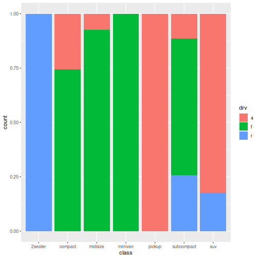
At first glance, this plot looks similar to the previous one. However, notice that all bars now have the same height.
The y-axis has changed from counts to proportions.
Instead of showing how many vehicles belong to each class, the bars now show the relative contribution of each drive type within a class.
This makes it easier to compare composition between classes, regardless of how many vehicles belong to each class.
Proportion Plot Interpretation
- What has changed on the y-axis?
- Why are all bars the same height?
- Which vehicle classes have the most similar composition?
Answers may vary.
In this episode, we used bar plots to explore the composition of our data.
By mapping variables to fill, we broke counts into parts, and used proportions to compare how groups are made up.
So far, we’ve explored relationships, distributions, summaries, and composition. We’ve learned how to create several kinds of plots. Now let’s make them easier for other people to understand.
- Bar plots show how data are divided into categories
-
geom_bar()counts observations automatically - Mapping
fillshows composition within groups -
position = "fill"converts counts to proportions - Composition focuses on parts of a whole, rather than shape or summary
Content from Communicating Results
Last updated on 2026-07-03 | Edit this page
Estimated time: 35 minutes
Overview
Questions
- How can we make plots easier to interpret?
- When is it helpful to split a plot into multiple panels?
- How can labels improve communication?
Objectives
- Use
facet_wrap()to create multiple panels from a grouped dataset - Add informative titles and axis labels with
labs() - Improve readability by rotating crowded axis labels with
theme() - Refine an existing plot to better communicate a message
R
library(ggplot2)
So far we’ve focused on creating plots to answer different questions:
- Relationships
- Distributions
- Group comparisons
- Composition
The final step is communication.
Even when a plot contains useful information, it may be difficult to read or interpret. ggplot2 provides tools that help us organise information and make plots clearer for our audience.
Improving labels
Let’s start with a plot we’ve seen before:
R
ggplot(data = mpg, mapping = aes(x = class)) +
geom_bar()

The plot communicates the data, but the labels come directly from the dataset.
We can make the plot more informative using labs():
R
ggplot(data = mpg, mapping = aes(x = class)) +
geom_bar() +
labs(
x = "Vehicle class",
y = "Count",
title = "Number of vehicles by class"
)
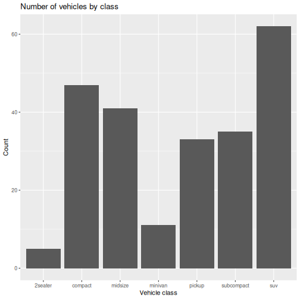
Splitting plots with facets
Sometimes a single plot contains too much information.
In our composition episode, we examined vehicle classes and drive type:
R
ggplot(data = mpg, mapping = aes(x = class, fill = drv)) +
geom_bar()
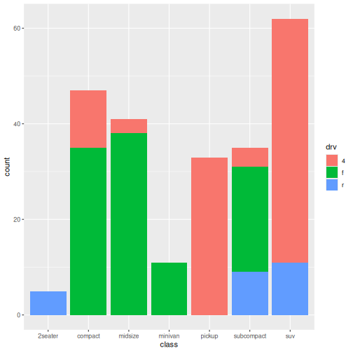
Instead of showing everything in one panel, we can create a separate panel for each drive type:
R
ggplot(data = mpg, mapping = aes(x = class)) +
geom_bar() +
facet_wrap(~ drv)
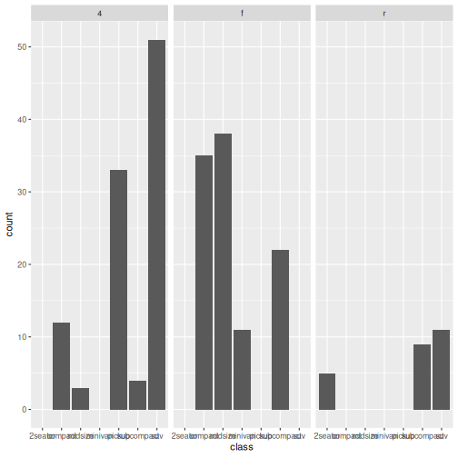
What happened?
- A separate plot is created for each drive type.
- All panels use the same scale.
- Comparing patterns between groups becomes easier.
Faceting is useful when:
- Several groups overlap in a single plot
- You want to compare patterns between groups
- Colour alone is not enough to separate information
Facet Plot Interpretation
- Which drive type includes the most vehicle classes?
- Are some vehicle classes only found in one panel?
- Is the pattern easier to interpret than the single combined plot?
Answers may vary.
Improving readability
Sometimes labels become crowded.
Consider the facet plot we just created. Notice that the x-axis labels are becoming crowded and difficult to read. How can we fix that?
We can rotate axis text to make it easier to read:
R
ggplot(data = mpg, mapping = aes(x = class)) +
geom_bar() +
facet_wrap(~ drv) +
theme(axis.text.x = element_text(angle = 45))
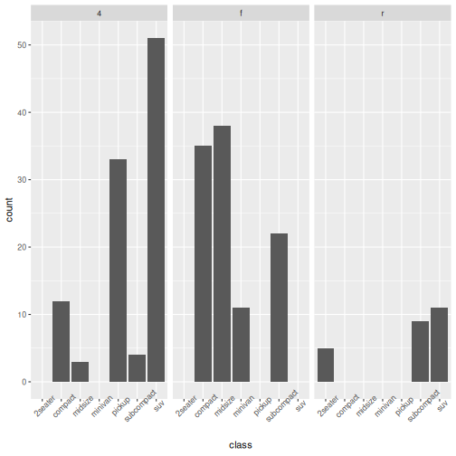
Rotating labels prevents overlapping text, improves readability, and requires only a small modification.
Make a plot publication-ready
Choose one plot from a previous episode.
Improve it by:
- Adding a title
- Improving axis labels
- Rotating labels if necessary
Answers may vary.
R
ggplot(data = mpg, aes(x = class, fill = drv)) +
geom_bar(position = "fill") +
labs(
title = "Drive type composition by vehicle class",
x = "Vehicle class",
y = "Proportion"
) +
theme(axis.text.x = element_text(angle = 45))
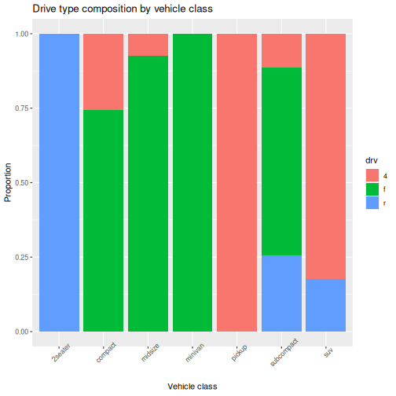
In this episode, we focused on communicating information clearly
using labels, facets, and simple formatting improvements. Throughout
this workshop, we have used ggplot2 to explore
relationships, distributions, group comparisons, and composition. Clear
communication helps ensure those visualisations can be understood and
used by others.
-
labs()adds informative titles and axis labels -
facet_wrap()creates a panel for each group - Faceting can make complex plots easier to interpret
- Small theme adjustments can improve readability
- Effective visualisation includes clear communication, not just correct code